41 私密区域：臀部和髋凹塑形
臀部和髋凹塑形再年轻化
JANI VAN LOGHEM, POLINA HOLOVINA, 和 PIETER SIEBENGA
41.1 引言
臀部的形状是许多文化中重要的审美特征。与身体其他部位一样，臀部也会受到年龄相关的变化的影响。由于体积丢失和皮肤松弛导致的臀部下垂、以及妊娠纹和橘皮样外观等皮肤形态改变，增加了患者对臀部进行再年轻化和/或重塑的需求。股骨结节凹陷，即所谓的“髋凹”，可能是由明显的肌肉轮廓造成的先天性特征，也可能是衰老过程的结果 [1]。
已经引入了各种技术来改善和重塑臀部。正确评估患者的期望对于决定哪种治疗能达到最佳效果至关重要。CaHA 可作为单药或多维度方法用于治疗皮肤松弛和橘皮样外观。使用 CaHA 也可以实现提升臀部（重塑），尽管其效果不如例如手术提臀术那样明显。
41.2 橘皮样外观（Cellulite）
橘皮样外观是一个用来描述皮肤改变的形态（例如凹陷或“橙皮样”外观），最常出现在臀部和后外侧大腿 [2]。在女性中，其患病率很高，约为 80–90%，尽管男性中仍罕见 [3]。认为橘皮样外观是一种多因素疾病，受皮下结缔组织异型性、循环系统异常、炎症和激素过程以及局部组织张力差异的影响 [4,5]。治疗橘皮样外观时，必须增加真皮和浅筋膜的强度和弹性。这可以通过重塑和新生胶原形成来实现。在一项针对患有中度至重度橘皮样外观女性的研究中发现，CaHA 联合微焦超声可视化技术，仅经过一次治疗就能显著改善橘皮样外观 [6]。这两种疗法都以其紧肤能力著称，因为它们通过新生胶原形成和弹性纤维新生来重塑真皮和浅筋膜中的胶原结构 [7]。
41.3 解剖学危险点
在臀部增补时，注射于真皮-真皮交界处是一种安全的方法。需要考虑的臀部区域解剖学危险点包括骶神经丛、坐骨神经以及内髂动脉分支的支枝（见图 41.1）。
41.4 用于臀部再年轻化的钝性套管针技术
注射定位，参见图 41.2。
41.4.1 分步技术
-
对臀部进行消毒。
-
标记治疗区域并将臀部分成四个相等象限。如有需要，可包括香蕉滚法（banana roll）。
-
将 CaHA 稀释至 1:2 至 1:6（取决于松弛的严重程度）。平均而言，1:3 的稀释度应足够。
-
麻醉并用 21G 锐针建立入路点（图 41.3）。
-
使用 22G、70 mm 的钝性套管针，在真皮-真皮交界处以线性逆行线状进行 CaHA 注射。每侧使用一到两支注射器。对于
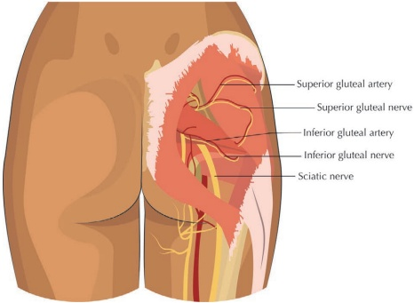
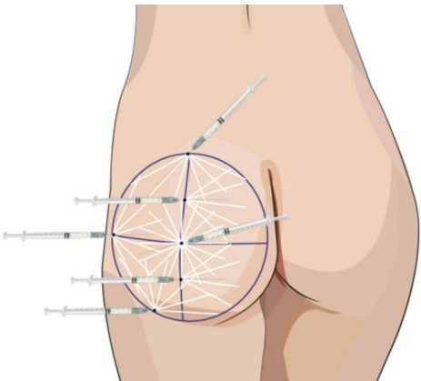
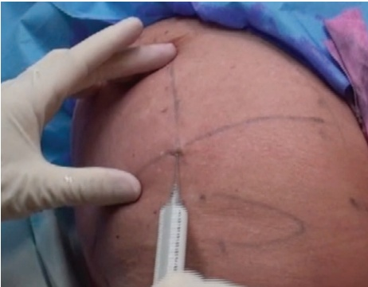
最佳效果需要总共进行三次疗程，每次间隔三到四个月。
41.5 锐针技术用于臀部再塑
有关注射定位，参见图 41.4。
41.5.1 分步技术
-
准备臀部的方法与使用钝性套管针技术时相同（消毒、标记和麻醉）。
-
将 CaHA 稀释至 1:2 至 1:6（取决于松弛的严重程度）。平均而言，1:3 的稀释度就足够了。
-
使用一根较长的（38 mm）27G 针头。
-
对于皮肤松弛，线性丝状即可；对于治疗橘皮组织，则需要交叉打（图 41.5）。在真皮-真皮下交界处注射 CaHA 以获得最佳效果。
-
如有必要，间隔三到四个月重复治疗。
有关使用锐针技术的前后对比结果和具体操作，请参见图 41.6。
41.6 锐针技术用于臀部凹陷塑形
有关注射定位，参见图 41.7。
41.6.1 分步技术
-
用两个同心圆评估和标记区域：外圈标记整个凹陷区域，内圈标记最凹陷的区域（图 41.8）。
-
对待治疗区域进行消毒。
-
使用 27G、20 mm 的针头，从最大凹陷的中心点开始注射，同时用非惯用手抬起组织。
注意：深真皮层每团注的最大剂量为 0.2 mL。
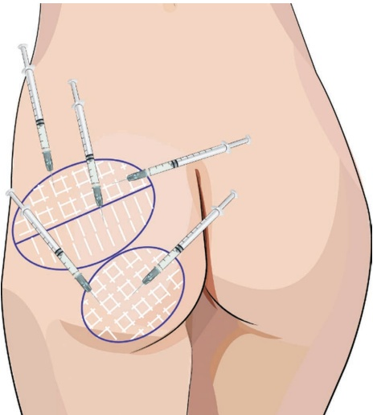
-
在每次注射后，将针头完全拔出、重新定向并推进。
-
从凹陷的中心向周围开始注射。在向外移动时，
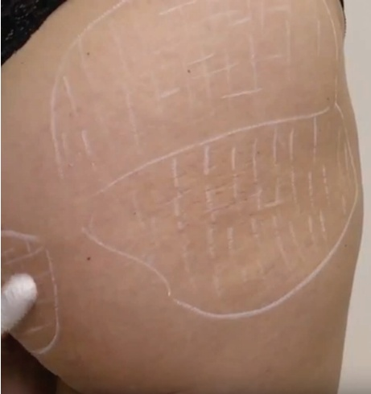
逐渐减少产品的总体积，形成“梯度效应”（图 41.9）。
- 评估效果；如有需要，补充更多产品。
41.7 钝性套管针用于臀部凹陷塑形技术
注射定位，参见图 41.10。
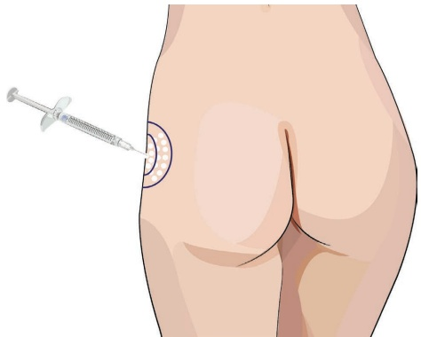
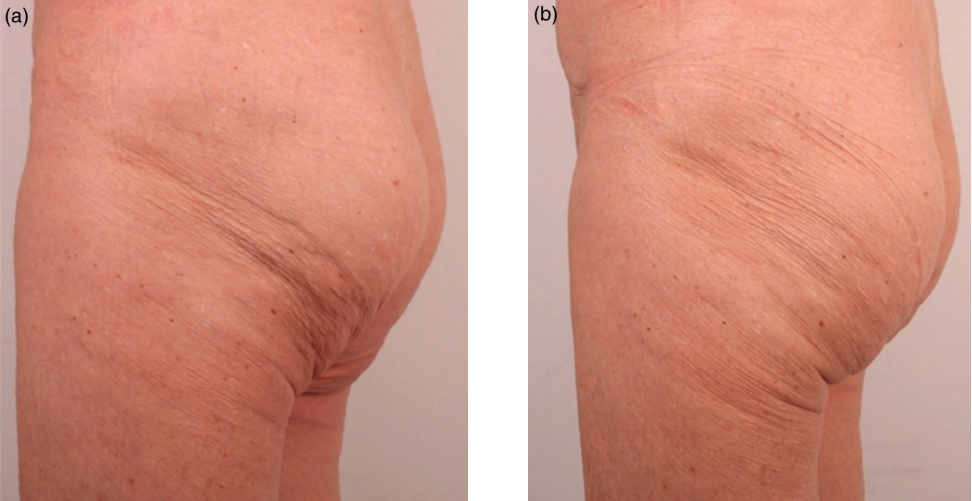
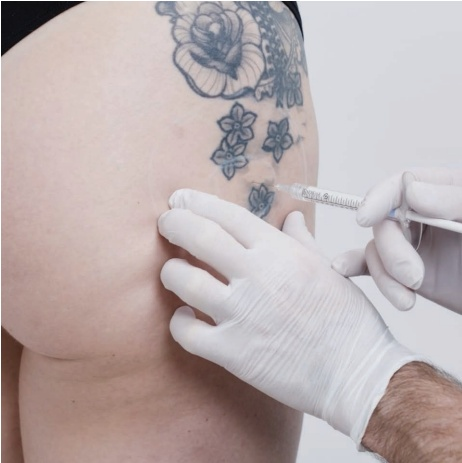
41.7.1 分步技术
-
与针剂技术类似，用两个同心圆评估并标记待治疗区域（图 41.11）。
-
对注射区域进行消毒。
-
选择最凹陷区域的套管针入点，并使用局部麻醉剂麻木该区域；为套管针创建开口（图 41.12）。
-
将一根 22G、50 cm 的套管针推进至深层皮下平面。使套管针尖朝向肌肉，开始在肌肉上方注射 0.2 mL 的团注（图 41.13）。
-
每完成一次团注后，重新定位套管针以增加安全性。
-
向外周移动时，继续采用扇形技术在皮下进行操作，创建“渐变效果”，确保体积均匀分布。以逆行扇形的方式注射 0.1–0.2 mL。
-
评估结果；如有需要，补充更多产品。
有关术前和术后效果以及应用技术的进一步信息，请参阅图 41.14。
41.8 术后护理
建议注射后进行有力度的按摩，以确保产品得到适当分布。由于存在浅表静脉，可能出现大面积瘀伤。
41.9 实现最佳效果的附加治疗
在大多数情况下，单药治疗无法为患者达到理想的效果。CaHA 用于皮肤质量
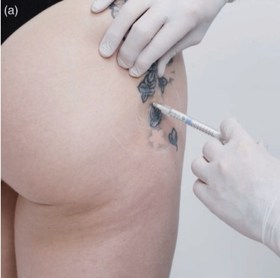
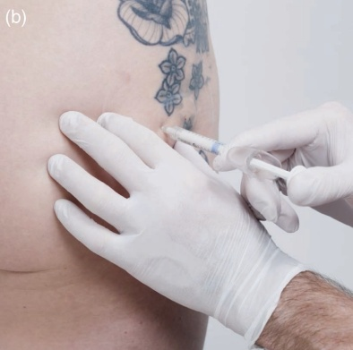
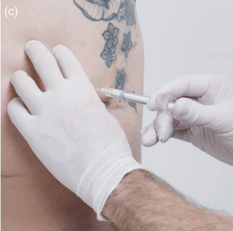
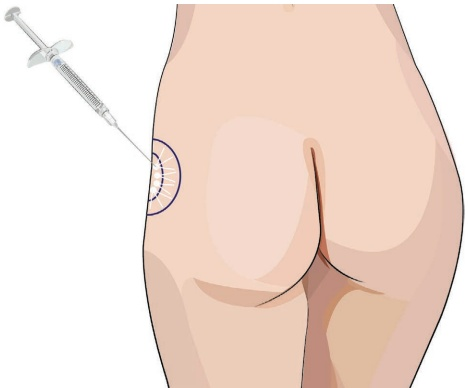
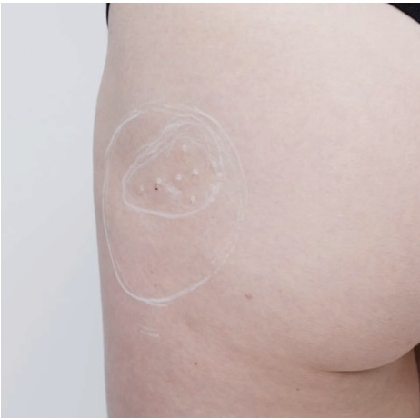
改善、紧致和提升臀部，但使用少量产品时体积增补能力非常有限，并且不能减少皮下脂肪纤维间隔。因此，通常需要多模式联合治疗。根据适应症，CaHA 可与表 41.1 中列出的其他疗法联合使用。
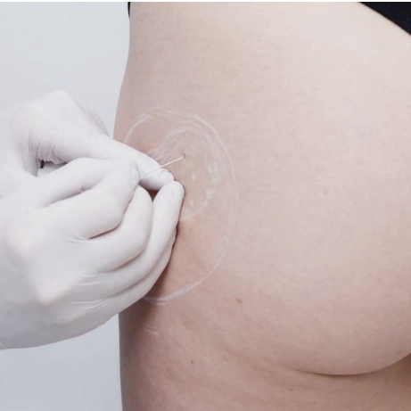
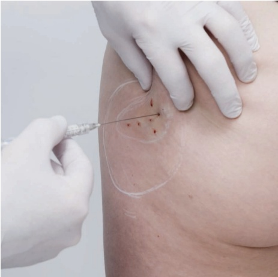
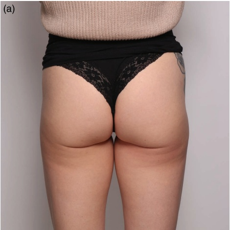
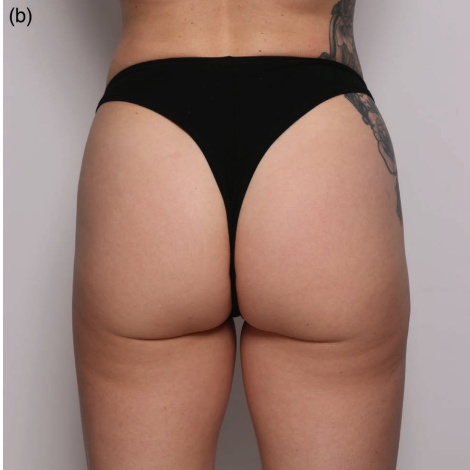
| 适应症 | 治疗选择 |
| 皮肤松弛 | • 可视化微焦超声 • 电射频 • 真皮下激光 • 稀释的 CaHA |
| 体积丢失 | • 填充性透明质酸填充剂 • 大量 CaHA • 自体脂肪移植（皮脂填充） • 手术臀部提升 • （硅酮）植入物 |
| 体积过剩 | • 抽脂 • 电射频 • 冷冻溶脂 • 注射溶脂 |
| 橘皮组织 | • 真皮下释放皮下纤维间隔 • 积极抽脂 |
来源：改编自参考文献 7。
参考文献
[1] L. Lourenco et al., “Hip dips technique: Filling lateral depressions with hyaluronic acid of large particles,” Skin Health Dis, vol. 4, no. 6, 2024.
[2] D. P. Friedmann et al., “Cellulite: A review with a focus on subcision,” Clin Cosmet Investig Dermatol, vol. 10, p. 17, 2017.
[3] E. Emanuele, “Cellulite: Advances in treatment: Facts and controversies,” Clin Dermatol, vol. 31, no. 6, pp. 725–730, 2013.
[4] M. M. Avram, “Cellulite: A review of its physiology and treatment,” J Cosmet Laser Ther, vol. 6, no. 4, pp. 181–185, 2004.
[5] B. Publishing, G. E. Piérard, “Commentary on cellulite: Skin mechanobiology and the waist-to-hip ratio,” J Cosmet Dermatol, vol. 4, no. 3, pp. 151–152, 2005.
[6] G. Casabona, G. Pereira, “Microfocused ultrasound with visualization and calcium hydroxylapatite for improving skin laxity and cellulite appearance,” Plast Reconstr Surg Glob Open, vol. 5, no. 7, 2017.
[7] K. M. Coleman, J. Pozner, "Combination therapy for rejuvenation of the outer thigh and buttock: A review and our experience," Dermatologic Surg, vol. 42, pp. S124–S130, 2016.